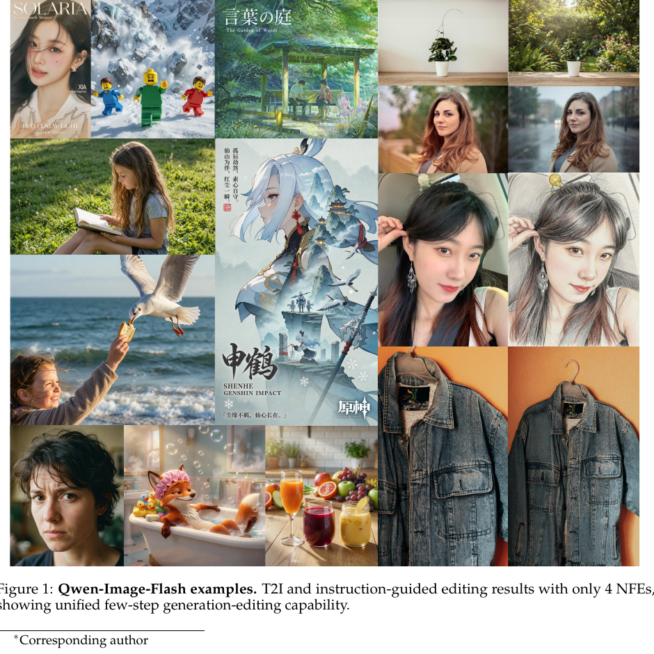
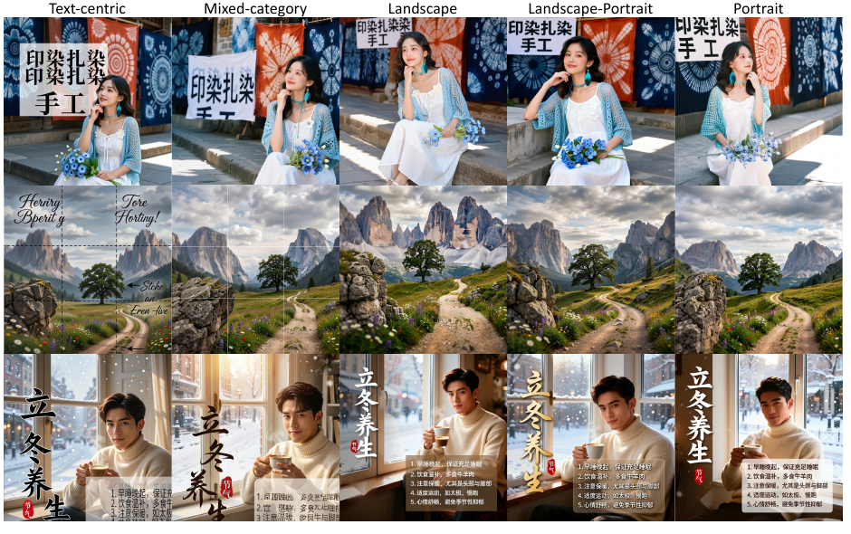
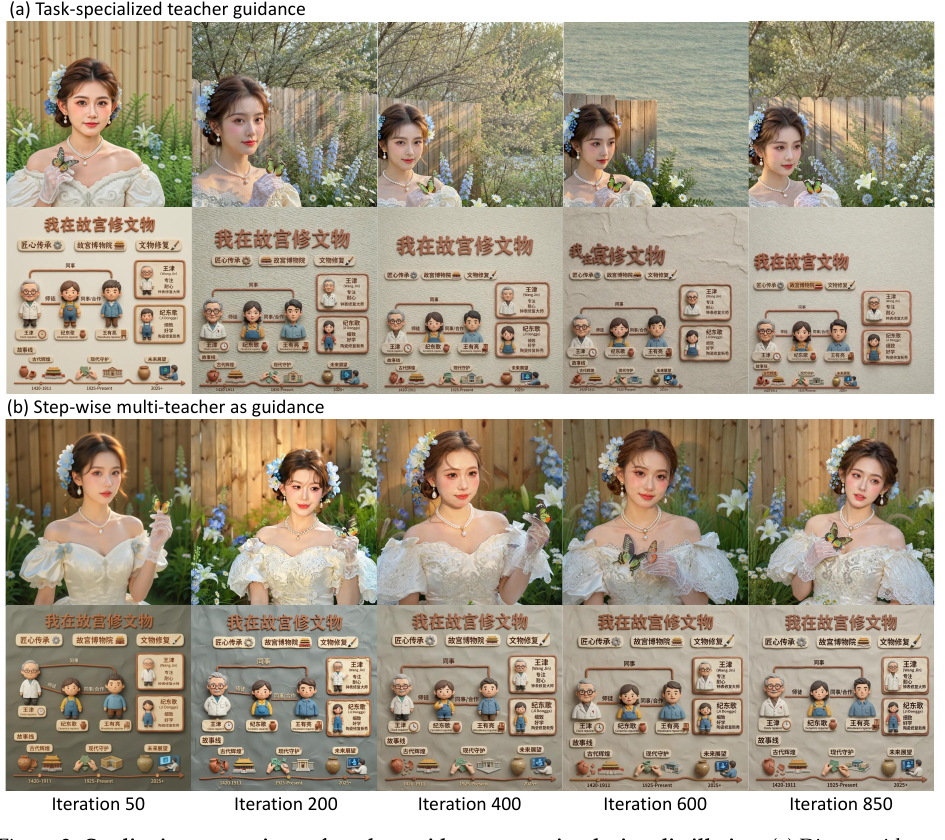
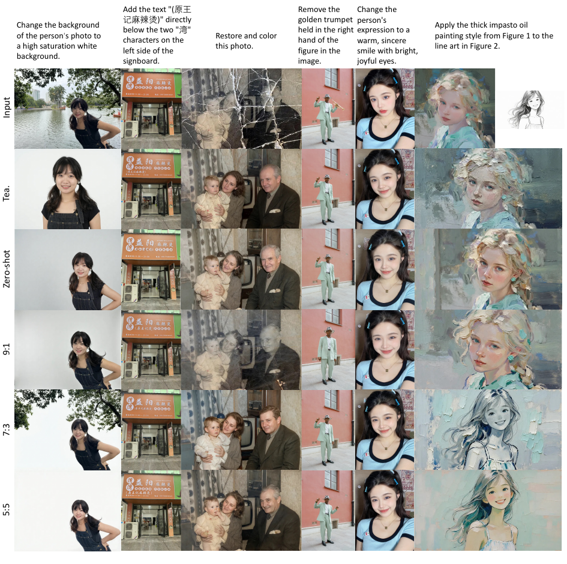

Qwen-Image-Flash: Beyond Objective Design

这是一篇技术报告,不是方法论文。 它没有开源训练代码(Qwen-Image-Flash 权重大概率会放出,但蒸馏 pipeline 不会)。所以本文的价值不在某一个公式,而在一组被实验证伪 / 证实的工程决策。下文 §2 的代码块全部是等价伪代码(非原文逐字),从报告正文 + 公开 DMD 实现重建,用来锚定主张,绝不冒充引用。
目标
把 80-NFE 的 Qwen-Image-2.0 蒸成 4-NFE 的统一 T2I + 指令编辑学生,质量不掉(部分维度反超教师)。
轴一·数据组成
蒸馏数据怎么选?结论反直觉:单类别连贯数据 > 多类别混合,文本中心数据有害。
轴二·教师引导
多个互补教师怎么用?直接换专精教师会崩,需要 step-wise 多教师加权:base 当锚,专精当佐料。
轴三·任务混合
生成 + 编辑怎么配比?T2I:Edit = 5:5 最优,且编辑监督反向增益 T2I。
1. 出发点 (Motivation)
扩散 / 流模型生成一张图要在 ODE 轨迹上迭代几十步(NFE,number of function evaluations),延迟和算力都吃不消。少步蒸馏(few-step distillation) 是标准解法:把多步教师压进一个几步就能出图的学生。过去五年这个方向几乎全在卷目标函数——trajectory-level 的 consistency / rectified flow、distribution-level 的 adversarial / DMD、以及二者的杂交。
本文的核心观察是:当你把一个设计精良的蒸馏目标(这里是 DMD)直接套到大规模、异构场景(尤其是密集文字渲染)上时,一个「看起来很合理」的常规训练配方往往达不到预期质量(见 Fig. 2)。换句话说,目标函数只是故事的一半。真正决定学生上限的,是目标函数嵌入其中的那套训练配方:喂什么数据、用哪个(些)教师、生成和编辑怎么配比。
作者用 Qwen-Image-2.0 当被试,把这套配方拆成三个可控维度系统消融,最后攒出 Qwen-Image-Flash。这篇报告的真正贡献,是把这三个维度上每一个反直觉的坑都标记了出来。
NFE
Number of Function Evaluations,一次采样里神经网络前向的次数。教师 80,学生 4,延迟差 ~20×。
DMD
Distribution Matching Distillation。不逐点模仿教师轨迹,而是让学生**输出分布**逼近教师分布,靠 student/teacher 两个 score 场之差做梯度。
Flow Matching
用线性插值 $z_t=(1-t)x+t\epsilon$ 连接数据与噪声,训练一个速度场预测 $\epsilon-x$。Qwen-Image 的底座范式。
real / fake score
DMD 里的两个 score 场:real score 来自(冻结)教师,代表目标分布;fake(student)score 由辅助网络在学生样本上实时拟合。
task-specialized teacher
在某个子任务(如人像、文字)上后训练得更强的教师。本文发现「更强」不等于「更好蒸」。
task mixture
联合蒸馏时 T2I 数据与编辑数据的配比(T2I:Edit)。本文证明它是一个一等决策变量,不是超参细节。
NFE-4 student
本文统一学生:4 步采样,既做文生图也做指令编辑,共享同一组权重。
2. 方法 (Method)
方法本身很轻——底座是现成的 flow matching + DMD,作者真正新增的只有 §2.3 的 step-wise 多教师引导一处。但「配方」三轴里每一轴都是一个被消融出来的决策,先用一张决策表压缩全局:
| 轴 | 起点(直觉做法) | 消融方向 | 最终选择 | 为什么 |
|---|---|---|---|---|
| 数据组成 | 多类别混合,越多越全 | landscape-only / portrait-only / text-centric-only / land+port / mixed | portrait-only(单类别连贯) | 混合会稀释教师的分布引导;单类别给学生一个干净一致的「接口」,反而跨类泛化更好(连没见过的文本中心都更强) |
| 教师引导 | 哪个子任务强就用哪个专精教师当唯一引导 | 直接换专精教师 vs. base 锚 + 专精 step-wise 加权 | step-wise 多教师 | 专精教师模式更尖锐,score 场与学生分布失配,4 步学生轨迹太短拽不回来 → 训练崩。base 教师当稳定锚 |
| 任务混合 | 编辑数据加一点就行(9:1) | 9:1 / 7:3 / 5:5 | 5:5 平衡 | 编辑监督太稀疏(9:1)形不成稳定信号,甚至不如纯 T2I;平衡混合提供密集多样的编辑监督,还反哺 T2I |
2.1 底座一:Flow Matching
Flow matching 用一条线性概率路径连接数据 \(x\sim p_{data}\) 和噪声 \(\epsilon\sim\mathcal N(0,I)\):
—— 翻译: $t=0$ 时是干净数据,$t=1$ 时是纯噪声,中间是二者的线性混合。$t$ 既是「时间」也是「噪声比例」。
沿这条路径,把一个点往前推的速度恰好是 \(\epsilon-x\)(对 \(z_t\) 求 \(t\) 的导数)。于是训练一个速度场 \(v_\theta\) 去预测它:
—— 翻译: 在每个噪声级别 $t$ 上,让网络预测「从噪声指向数据的那个方向」。$c$ 是条件(文本 embedding、编辑指令、任务信号)。采样时从 $z_1$ 出发,把这个 ODE 从 $t=1$ 积分回 $t=0$ 就得到图。教师就是这么个 80 步积分器。
2.2 底座二:DMD 目标
DMD 不让学生逐点模仿教师那条 80 步轨迹(那会把 solver 误差也学进去),而是让学生输出的分布逼近教师分布。学生一步出图 \(x_\theta = G_\theta(\epsilon,c)\),再加独立噪声扰动到中间态 \(x_t=(1-t)x_\theta+t\xi\),然后最小化二者条件分布的 KL:
—— 翻译: 「让学生生成的图的分布,整体上像教师生成的图的分布」。注意是分布对分布,不是图对图。
KL 不直接优化,而是用两个 score 场之差做梯度估计:
—— 翻译: $s_{\text{real}}$ 是教师给的「真实分布该往哪走」,$s_{\text{stu}}$ 是一个辅助网络实时拟合的「学生当前分布往哪走」。两者之差就是把学生分布往教师分布推的力。这是 DMD 的全部机理。
这里 \(s_{\text{real}}\) 来自冻结的预训练教师,\(s_{\text{stu}}\) 由一个在学生样本上持续训练的辅助 score 网络给出。本文唯一改动的就是 \(s_{\text{real}}\) 这一项——下一节。
2.3 新增:Step-wise 多教师引导
问题:不同子任务上,最强的教师不是同一个(人像有人像的专精教师,文字有文字的)。直觉是「哪个任务用哪个专精教师当 \(s_{\text{real}}\)」。但 §4.2 发现:直接换专精教师,学生先涨后崩(Fig. 3a),因为专精教师的分布更尖锐,score 场和 4 步学生当前分布失配太大,学生轨迹太短拉不回来。
解法:不要单一教师。在第 \(k\) 个被选中的学生蒸馏步上,把 real-score 写成 base 教师 + 一组专精教师的凸组合:
—— 翻译: $m=0$ 是 base 教师(稳定锚),$m\ge 1$ 是各专精教师。权重 $\lambda_{k,m}$ 同时依赖「学生第几步 $k$」和「条件 $c$(什么任务)」。凸组合约束保证合成的 score 场始终是一个合法的、平滑的引导,不会被某个尖锐专精教师带飞。
把它代回 DMD 梯度,就是带 step-wise 多教师引导的最终目标:
—— 翻译: 和原版 DMD 梯度长得一模一样,只是把单一 $s_{\text{real}}$ 换成「base + 专精」的加权和。实现上零侵入:任何在某子任务上强的教师,直接加进这个 $\sum$ 就行,不改目标函数、不加优化模块。
下面是这个机理的等价伪代码(非原文逐字)——报告没开源,这段从 Eq. (5)(7) + 公开 DMD2 实现重建,只为锚定上面两条公式:
等价伪代码 — 非原文逐字,从 Eq.(5)/(7) + 公开 DMD 实现重建
# step-wise 多教师 DMD 梯度(等价伪代码,非原文逐字)
def dmd_grad_multiteacher(student_G, fake_score_net, teachers, lambdas, eps, cond, k):
# 1. 学生一步出图,再扰动到随机中间态 x_t
x0 = student_G(eps, cond) # x_theta = G(eps, c)
t = sample_t() # t ~ p_t
xi = randn_like(x0)
xt = (1 - t) * x0 + t * xi # x_t = (1-t)x0 + t*xi
# 2. fake (student) score:辅助网络在学生样本上实时拟合
s_stu = fake_score_net(xt, t, cond)
# 3. real score:base 教师(m=0)做锚 + 专精教师凸组合
# lambdas[k] 依赖学生步 k 与条件 c,且 sum_m lambda = 1
s_real = sum(lambdas[k][m](cond) * teachers[m](xt, t, cond)
for m in range(len(teachers))) # Eq.(5)
# 4. DMD 梯度:两个 score 场之差,反传到学生
grad = (s_stu - s_real) # Eq.(7) 括号内
return autograd_backward(x0, grad_outputs=grad) # nabla_theta x0^T (s_stu - s_real)
实现细节(§4.4):早期被选步上 base 教师权重占主导(给学生一个稳定的分布锚),随训练推进再选择性地把专精教师的权重抬上来注入下游能力。这正是「step-wise」的含义——权重随学生蒸馏步演化,而不是全程钉死一个教师。这一思路明确受 on-policy distillation 一脉(flow-opd-2026、diffusion-opd-2026)启发:让教师监督适配不断变化的学生策略,而非用一个固定教师从头压到尾。
3. 结论 (Key findings)
报告的产出是六条带编号的 Takeaway,每条都有反直觉成分。按三轴归类(数字均来自 Gemini 3.1 Pro / GPT 5.5 双自动评测,分越高越好):
轴一·数据组成(§3,Table 1)

- Takeaway 1:T2I 蒸馏对数据分布极度敏感。最反直觉的是 text-centric-only(E3):它提供了对文字渲染最直接的监督,却在所有 5 种配置里平均分最低(Gemini 2.63 / 排名第 5),连文本中心这一项自己都比 landscape-only/portrait-only 差。直接喂文字样本 ≠ 学会渲染文字,反而引入优化 / 分布难度。
- Takeaway 2:单类别连贯数据能跨域泛化。portrait-only(E2)拿到全场第 1(Gemini 3.42 / GPT 4.15),landscape-only(E1)第 3,且二者在没训过的文本中心split 上都反超 E3/E5。而把两个强单类别合并的 land+portrait(E4,4 万样本)反而打不过单独的 portrait(E2,2 万样本)——更多类别 ≠ 更好监督,反而削弱训练信号的一致性。
轴二·教师引导(§4,Table 2)

- Takeaway 3:用专精教师当唯一引导会让少步蒸馏失稳——尽管它下游更强。
- Takeaway 4:step-wise 多教师引导让 4-NFE 学生既稳又强。Qwen-Image-Flash-T2I(4 NFE)拿到 Gemini 3.56 / GPT 4.15,在总排名上反超 80-NFE 的 base 教师(排名 2 vs 3),逼近专精教师(排名 1),NFE 却只有 1/20。
轴三·任务混合(§5,Table 3 & 4)

- Takeaway 5:T2I:Edit 配比是联合蒸馏的胜负手。9:1(编辑数据仅 10%)在 Editing-Bench 上最差,甚至低于纯 T2I 零样本基线——编辑监督太稀疏形不成稳定学习信号。7:3 已超教师(Gemini 均分),5:5 平衡混合全场第 1(Gemini 2.97 / GPT 3.41,均超零样本的 2.77/3.28)。
- Takeaway 6:加编辑数据不仅没拖累 T2I,反而普涨 T2I。所有联合蒸馏学生的 T2I-Bench 分都高于纯 T2I 基线(Table 4)。作者解释:编辑任务逼模型做细粒度指令理解、区域定位、内容保留、图文一致——这些能力对 T2I 的 prompt following 同样有益,成了一种互补的视觉-文本监督信号。
4. 实现细节 (实验配方 / 工程线索)
没有 repo,这一节给的是可复现的配方参数,而不是
file:Lnn引用。技术报告的「实现细节」就是它的训练食谱。
- 教师与底座:教师是 Qwen-Image-2.0-Base(纯预训练,未经偏好学习 / RL / 任何后训练),目的是把变量隔离到「数据分布」本身。学生蒸成 4-NFE,用 DMD。底座是 qwen-image-2-2026 的 MMDiT + f16c64 高压缩 VAE。
- 蒸馏 prompt 的来源:用 Qwen3 生成三类 prompt——landscape / portrait / text-centric,每类 2 万条 diverse prompt。五种组成:三个单类别、一个 land+port、一个全混合(6 万)。
- 优化协议固定:所有学生同一套 protocol——AdamW,2000 iterations,这样性能差异只能归因于数据组成。这是这篇消融能成立的关键控制。
- Step-wise 调度的落地方式:base 教师在早期被选蒸馏步当主锚,专精教师随训练推进选择性加入(权重 \(\lambda_{k,m}\) 随 \(k\) 演化)。报告没给具体 \(\lambda\) 数值表——这是复现的最大不确定点。
- 任务混合的控制变量:固定总训练预算和优化协议,只改编辑数据占比(9:1 / 7:3 / 5:5),隔离 task-mixture 效应。
- 两个自建 benchmark:T2I-Bench(1800 例 = 3 类 × 600)、Editing-Bench(1500 例 = 6 类 × 250,涵盖场景级语义变换 / 感知增强 / 物体操作 / 文字编辑 / 身份保持 / 风格迁移)。评测器是 Gemini 3.1 Pro + GPT 5.5 做偏好打分,且每个编辑子类用定制 system prompt。
- 失败的尝试(§6.1,负结果很有价值):为了缓解专精教师导致的结构失稳,作者照 DP-DMD 加了首步 flow-matching 监督显式约束早期结构。结果:结构稳定性确实↑(版面漂移↓),但视觉质量轻微↓——首步监督是个 trade-off,它把学生往稳定结构上拽的同时,也限制了专精教师能提供的分布引导。所以最终方案没用它,而是靠 step-wise 多教师本身解决稳定性。
论文 vs. 直觉的落差(本文亲手标出的「坑」):
- 「文本中心数据 → 文本渲染能力」这条因果不成立(E3 自己的文本 split 都更差)。
- 「更强的教师 → 更好的蒸馏引导」这条不成立(专精教师单用会崩)。
- 「编辑数据 → 牺牲生成能力」这条反向成立(编辑反而涨 T2I)。
- 残留噪声:加编辑数据后,部分 T2I 输出在大面积干净背景上有轻微残留噪声,说明 4 步在某些情况下去噪轨迹没走完——作者点名 GPT Image 2 也有类似现象,不是本模型独有。
5. 批判性总结 (Critical assessment)
Strengths
- 把「配方」做成一等公民。 绝大多数少步蒸馏论文把数据 / 教师 / 任务配比当超参一笔带过,本文用三组控制变量实验证明它们各自能决定成败,且每个结论都附反直觉的负样本。这是技术报告该有的诚实。
- step-wise 多教师是真·零侵入。 不改 DMD 目标、不加优化模块,就是把 \(s_{\text{real}}\) 从单教师换成凸组合。任何团队手里有多个互补教师都能直接抄。
- 负结果写得清楚。 §6.1 的首步监督失败 + §6.2 的残留噪声,都没藏着掖着。
Limitations / open questions
- \(\lambda_{k,m}(c)\) 是个黑盒。 全文最核心的机制——权重怎么随步数 \(k\) 和条件 \(c\) 演化——没有给出具体调度函数或数值表,只说「早期 base 主导、后期抬专精」。这让 step-wise 多教师从「方法」退化成「一类做法」,复现者得自己调。这是本文最大的可复现性缺口。
- 评测全靠 LLM-as-judge。 T2I-Bench / Editing-Bench 完全用 Gemini 3.1 Pro + GPT 5.5 打分,没有人评、没有 FID/CLIP/GenEval 等客观指标交叉验证。LLM 评测器对「文字是否正确」这类硬约束并不可靠,而文字渲染恰恰是本文反复强调的难点。
- 结论的可迁移性存疑。 「单类别 > 混合」「5:5 最优」都是在 Qwen-Image-2.0 这一个底座、2000 iter 这一个预算下得到的。换底座 / 换 NFE / 换教师组,这些甜点值大概率会变。报告也没给跨底座的鲁棒性验证。
- 闭源。 训练 pipeline、\(\lambda\) 调度、benchmark prompt 都未释出,外部很难独立证伪。
When to use / not use
- 用它:你在做大模型少步蒸馏,手里有多个互补教师且单用某个会失稳 → 抄 step-wise 多教师凸组合;你在配联合生成-编辑数据 → 从 5:5 起调,别从 9:1。
- 别迷信:别把「单类别 > 混合」「5:5 最优」当普适定律照搬——它们是这个底座下的经验甜点,换设置先自己消融。也别指望它解决密集小字渲染(作者自己承认仍是 limitation)。
延伸阅读 (Further reading)
交叉验证比较 (Cross-validation against similar work) — 都在解「把多步教师压成几步学生」,但切入轴不同,结论也各有侧重:
| 工作 | 核心结论 | 关键观察 | 与本文的异 / 同 |
|---|---|---|---|
| 本文 (Qwen-Image-Flash) | 胜负手在训练配方(数据/教师/任务),不在目标函数 | 单类别数据跨域泛化更好;专精教师单用会崩;5:5 最优 | — |
| flow-opd-2026 | 把 LLM 的 on-policy distillation 严格搬到 flow matching,reverse-KL 退化为速度场 L2 | 多教师 dense 监督 + 美学锚;SD3.5-M 上 GenEval 63→92 | 同:都用多教师、都强调教师要适配演化中的学生;异:Flow-OPD 卷的是目标函数(新的 OPD 损失),本文明确说目标函数只是一半、配方才是另一半 |
| diffusion-opd-2026 | 反向 KL 在同协方差 one-step Gaussian 下解析坍缩成 L2 transition matching | round-robin 多 teacher(per-task LoRA);average 0.929 反超 cascade | 同:多教师、on-policy 思想;异:DiffusionOPD 给出了闭式的多任务 KL,本文的 \(\lambda\) 调度是经验黑盒 |
| mambo-g-2025 | 免训练就能加速:用幅度比 \(r_t\) 自适应阻尼 CFG | SD3.5 提速 3×,已并入 Diffusers | 异:MAMBO-G 根本不蒸馏、不训练,从采样器侧加速;本文是重训练蒸馏。两条正交路线,可叠加 |
| d-opsd-2026 | 步蒸模型「边用边学」:同模型分饰 student/teacher 自蒸馏 | Z-Image-Turbo / FLUX.2-klein 持续调优,无需 reward | 同:都关心步蒸学生的下游能力转移;异:D-OPSD 解决的是部署后持续学新概念,本文解决的是一次性蒸出统一学生 |
分歧的可能成因:Flow-OPD / DiffusionOPD 把精力放在推导一个更优的蒸馏目标(因为它们的底座规模较小、能把 KL 推到闭式),而本文用的是工业级 Qwen-Image-2.0、目标函数固定为 DMD,于是变量自然落到「目标函数之外」的配方上。这不是矛盾,而是问题规模决定了优化重心:小模型卷损失函数,大模型卷数据 / 教师 / 任务的组织方式。MAMBO-G 的「免训练」与本文的「重训练」则是成本-质量光谱的两端,可以组合使用。
相关工作 (Related work)
- qwen-image-2-2026 — 本文的教师与底座(MMDiT + f16c64 VAE + 1k token 中文长文本渲染)。
- self-flow-2026、self-forcing-2025 — 自监督 / 自强迫蒸馏的相邻范式。
6. 研究启发 (Transferable takeaways)
1. 大模型时代,配方 > 损失函数
当底座足够强、目标函数足够成熟时,边际收益从「设计新 loss」转移到「组织数据 / 教师 / 任务」。这条规律在 LLM 后训练已被验证,本文把它搬到了视觉生成蒸馏。
2. 凸组合 = 多专家融合的稳定阀
有多个互补但尖锐的专家时,$\sum\lambda_m=1$ 的凸组合 + 一个稳定锚,是个通用的「既要又要」配方:既吸专家能力,又不被任一专家带飞。可迁移到 MoE 路由、多教师蒸馏、ensemble。
3. 反直觉点·更多数据会变差
预训练的「数据越多越好」直觉在蒸馏里失效:学生容量和轨迹长度有限,数据的作用从「覆盖」变成「决定教师引导怎么暴露给学生」。异构混合会稀释、扰乱迁移。少而连贯 > 多而杂。
4. 反直觉点·辅助任务反哺主任务
给联合蒸馏加编辑数据,不仅没牺牲 T2I,反而涨了——细粒度指令理解 / 区域定位 / 图文一致这些「编辑技能」是 T2I prompt following 的共享底座。设计多任务时别默认任务间是零和。
5. 负结果也是产出
「首步监督换稳定性但掉质量」这种 trade-off,写出来比藏起来有用得多。技术报告的可信度恰恰建立在它愿意公开多少条死路上。
讨论 / Comments
评论托管在本仓库的 GitHub Discussions, 需 GitHub 账号。